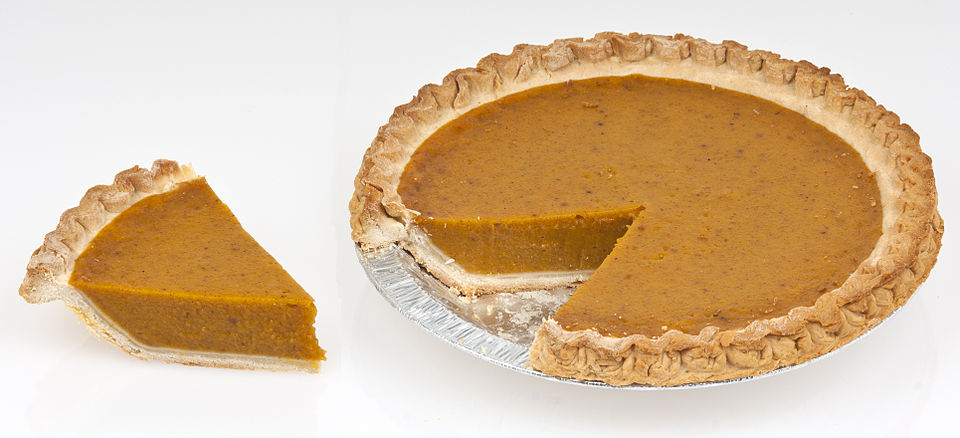

Published November 6, 2023
White Pumpkin Pie with Brown Butter
Roast the squash first, always
- Squash
- Dessert
- American
- holiday
- make ahead
- heirloom squash
White heirloom pumpkins roasted until caramelised, pureed, and baked into a custard with brown butter and warm spice. Deeper and less watery than anything from a can.

Photo: Evan-Amos · CC BY-SA 3.0 · via Wikimedia Commons · all image credits
Ingredients
- 1 small white pumpkin or squash (2 to 3 pounds / 1 to 1.4 kg)
- 1 1/4 cups all-purpose flour, plus more for dusting
- 1/2 teaspoon kosher salt
- 1/2 cup cold unsalted butter, cubed
- 3 tablespoons ice water
- 6 tablespoons butter, browned and cooled
- 3/4 cup packed dark brown sugar
- 2 large eggs plus 1 yolk
- 1 1/2 cups pumpkin puree (strained if wet)
- 3/4 cup whole milk or evaporated milk
- 2 teaspoons ground cinnamon
- 1 teaspoon ground ginger
- 1/2 teaspoon freshly grated nutmeg
- 1/4 teaspoon ground cloves
- 1 teaspoon vanilla extract
- 1 tablespoon bourbon (optional)
- Whipped cream, to serve
Equipment
- Sheet pan
- Food processor or potato ricer
- 9-inch pie dish
- Rolling pin
- Pie weights or dried beans
Why this recipe works
There is no comparison between canned pumpkin puree and a squash you roasted yourself. Roasting concentrates the sugars, drives off water, and adds a faintly toasted edge that no canning process can reproduce, which is why this pie sets more firmly and tastes more like caramel.
White pumpkins are ideal for the job. Their flesh is dense and dry rather than stringy, so the custard needs less draining and the finished pie slices cleanly. Blue Hubbard and Long Island Cheese work just as well.
Heirloom varieties to look for
Lumina, Baby Boo (for small pies), Valenciano and Long Island Cheese are the classic white pumpkins. All are open-pollinated and store for months at 50 to 55 F in a dry, dark room.
Method
Roast the pumpkin
Heat the oven to 400 F (200 C). Halve the pumpkin, scrape out the seeds and strings, and lay the halves cut side down on the sheet pan. Roast for 45 to 60 minutes, until a knife slides through the flesh with no resistance.
Make the puree
Cool the pumpkin for 20 minutes, then scoop the flesh into a food processor and puree until completely smooth. If it is watery, set it in a fine strainer over a bowl for 30 minutes and discard the liquid; you want 1 1/2 cups of thick puree.
Blind-bake the crust
Rub the flour and salt with the cold butter until crumbly, add the ice water a spoonful at a time, gather into a disc, and chill for 30 minutes. Roll, line the pie dish, crimp the edge, and freeze for 15 minutes. Line with parchment, fill with weights, and bake at 375 F for 20 minutes; remove the weights and bake 8 minutes more.
Brown the butter
Melt the 6 tablespoons butter in a small pan over medium heat and cook until the milk solids turn amber and smell nutty, about 4 minutes. Pour into a heatproof bowl and cool for 10 minutes.
Mix the custard
Whisk the brown sugar, eggs and yolk in a large bowl until smooth. Add the pumpkin puree, milk, brown butter, spices, vanilla and bourbon and whisk until completely uniform. Tap the bowl on the counter to release air bubbles.
Bake
Reduce the oven to 350 F (175 C). Pour the filling into the crust and bake for 50 to 60 minutes, until the edge is set and the centre jiggles only slightly when nudged. A knife inserted an inch from the edge should come out clean.
Cool and chill
Cool completely on a rack, then refrigerate for at least 3 hours, ideally overnight. Pumpkin custard firms substantially as it chills, so cutting early will give you a soft slice.
Serve
Serve at cool room temperature with lightly sweetened whipped cream and an extra grating of nutmeg. The pie is best on the day it is made but keeps well for three days.
Cook's notes
- Roast rather than steam or boil. The drier the puree, the less chance of a cracked custard.
- Bake the pie on the lower-middle rack so the bottom crust sets before the custard overbrowns.
- If the crust darkens too quickly, tent the rim with a foil ring after 30 minutes.
- There is no need for the old knife test straight through the centre; it causes the custard to split along the cut.
Variations
- Swap the spices for 1 1/2 teaspoons of five-spice powder and add 2 tablespoons of molasses.
- Add a layer of chopped toasted pecans and a tablespoon of maple syrup to the bottom of the crust before filling.
- Make it dairy-free with coconut milk in place of the milk and a shortening crust.
Storage
Refrigerate for up to 4 days, loosely covered once cold. Do not freeze a baked custard pie; the custard weeps. Extra puree freezes beautifully for 6 months in 1 1/2-cup portions.
How to serve it
1 slice per serving. Serve it within the time noted above for the best texture, because heirloom produce is far less forgiving than supermarket vegetables.